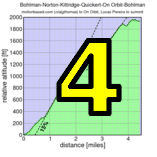

|  |  |
 |

|
| Best costume winner and top woman Lisa Penzel (Franz Kelsch) |
It was hump day for the 2011 Low-Key Hillclimbs, and with it, the smallest hump in the series: Palomares Road.
I don't ever recall anything quite like this in the history of this series: after the gradual first half-mile the group was obviously still intact, but with only a mile of 7-9% grade following this, Tracy's steady but fast pace was unable to split the pack. From there it was mostly gradual slopes. Riders made their efforts: Nils Tikkanen, for example, took pulls from the front with his time trial bike, but the group remained almost fully intact as others were pulled along in the vacuum of the large group. Finally the end game: the group split first in the middle, then in the sprint Tracy Colwell and Keith Sz... I mean McLovin' launched themselves off the front with McLovin' victorious. But with today's small-group format, riders with the same time are given the same placing, so officially Tracy and McLovin' tied for the day's top position. With the rapid pace, McLovin demolished Nate English's Strava KOM by 44 seconds.
Other groups were less coherent, and as a result riders benefited less from the draft. The top 15 in the day's ranking all came from the 16 riders of Group 1 (not counting Bill, who rode off the front on his hybrid electric). Today was part mass-start race, part team time trial as any intercene conflicts hurt all members of a group.
On the women's side, Lisa Penzel was the big winner on the day, not only finishing fastest, but also becoming the clear winner in the costume contest. Nicely done, Lisa!
In the team competition it looks like Team Low-Key took the V for the first time this year, JUST BARELY over Sisters and Misters, with Brown Zone a close third.
But no matter what transpired on the road, spirits were universally high at the finish as the morning chill had given way to gorgeous, warm sunshine. There could be no better day to be on a bike, and Palomares Road is a gorgeous place to do it.
Huge thanks today to coordinator Janet Martinez who managed to not only expertly organize volunteers and participants in this relatively complex week, but even managed to ride herself, starting with the last group.
Strava T-shirt qualifiers indicated with orange background.
| pl | # | name | team | cat | time | mph | fph | score |
|---|---|---|---|---|---|---|---|---|
| 1 | 6 | Bill Bushnell | Low-Key | Its All About The Bike | 11:37 | 23.55 | 5485 | 109.81 |
| pl | # | name | team | cat | time | mph | fph | score |
|---|---|---|---|---|---|---|---|---|
| 1 | 106 | McLovin | The Brown Zone | 1 | 17:00 | 16.09 | 3748 | 121.32 |
| 2 | 48 | Tracy Colwell | Team Colwell | 40+ | 17:01 | 16.08 | 3745 | 121.20 |
| 3 | 404 | Jacob Berkman | Dolce Vita Cycling | 30+ | 17:05 | 16.02 | 3730 | 120.73 |
| 4 | 510 | Clark Foy | San Jose Bike Club | 45+ | 17:07 | 15.98 | 3723 | 120.50 |
| 4 | 1 | Daniel Connelly | Low-Key | 3 | 17:07 | 15.98 | 3723 | 120.50 |
| 4 | 523 | Brian Lucido | Sr's & Mr's of No Mercy | Tandem | 17:07 | 15.98 | 3723 | 120.50 |
| 4 | 248 | Carl Nielson | Sr's & Mr's of No Mercy | M50+ | 17:07 | 15.98 | 3723 | 120.50 |
| 4 | 512 | Mario Hernandez | Audi | 3 | 17:07 | 15.98 | 3723 | 120.50 |
| 9 | 144 | Nils Tikkanen | Bike Trip/Symantec | Honey Badger | 17:11 | 15.92 | 3708 | 120.03 |
| 10 | 44 | Tim Clark | Low-Key | 40+ | 17:13 | 15.89 | 3701 | 119.80 |
| 11 | 59 | Mark Edwards | Bike Trip/Symantec | 50+ | 17:20 | 15.78 | 3676 | 118.99 |
| 12 | 114 | Steve Peck | Western Wheelers | 45+ | 17:28 | 15.66 | 3648 | 118.08 |
| 13 | 37 | Ronald Brunner | The Brown Zone | Low-Key | 18:07 | 15.10 | 3517 | 113.85 |
| 13 | 329 | Dave Blizard | Pen Velo/Pomodoro | 40+ | 18:07 | 15.10 | 3517 | 113.85 |
| 15 | 7 | James Porter | Western Wheelers | 3 | 18:11 | 15.05 | 3504 | 113.43 |
| 16 | 226 | Tom Gardin | 45+ | 18:13 | 15.02 | 3498 | 113.22 | |
| 17 | 308 | Rune Dahl | Western Wheelers | 45+ | 18:15 | 14.99 | 3492 | 113.01 |
| 18 | 53 | J.D. Daniels | Eden Bikes | 35+ | 18:17 | 14.96 | 3485 | 112.81 |
| 19 | 213 | Andy Crews | Diablo | 40+ | 18:22 | 14.90 | 3469 | 112.30 |
| 20 | 133 | Dai Sieh | The Brown Zone | Robusto | 18:24 | 14.87 | 3463 | 112.09 |
| 21 | 240 | Paul McKenzie | Marc Pro - Strava | 55+ | 18:31 | 14.78 | 3441 | 111.39 |
| 22 | 33 | Bill Brier | Team Fremont FFBC p/b Chipotle | 45+ | 18:35 | 14.72 | 3429 | 110.99 |
| 23 | 261 | Joe Sullivan | San Jose Bike Club | 35+ | 18:36 | 14.71 | 3426 | 110.89 |
| 24 | 63 | Joe Fant | San Jose Bike Club | 50+ | 18:44 | 14.60 | 3401 | 110.10 |
| 25 | 528 | Daryl Spano | San Jose Bike Club | 45+ | 18:53 | 14.49 | 3374 | 109.22 |
| 26 | 237 | Justin Lucke | LGBRC | Plant Based | 18:58 | 14.43 | 3360 | 108.74 |
| 26 | 273 | David Nader | Pen Velo/Pomodoro | 40+ | 18:58 | 14.43 | 3360 | 108.74 |
| 28 | 524 | David Malachowski | Eden Bikes | 19:20 | 14.15 | 3296 | 106.68 | |
| 29 | 92 | KP | The Brown Zone | None Of Your Bee'S Wax | 19:28 | 14.05 | 3273 | 105.95 |
| 30 | 66 | Klaus Fleischmann | 40= | 19:31 | 14.02 | 3265 | 105.68 | |
| 31 | 233 | Alexander Komlik | San Jose Bike Club | 45+ | 19:32 | 14.01 | 3262 | 105.59 |
| 32 | 78 | Tick Houk | The Brown Zone | 50+ | 19:33 | 13.99 | 3259 | 105.50 |
| 33 | 94 | Jim Langley | Bike Trip/Symantec | 55+ | 19:34 | 13.98 | 3257 | 105.41 |
| 34 | 225 | Chris Furgiuele | Dolce Vita Cycling | 35+ | 19:35 | 13.97 | 3254 | 105.32 |
| 35 | 112 | Shance Ordell | Western Wheelers | 35+ 123 | 19:38 | 13.94 | 3246 | 105.05 |
| 35 | 526 | Dennis Pedersen | Bike Trip/Symantec | 50+ | 19:38 | 13.94 | 3246 | 105.05 |
| 37 | 80 | Martin Hyland | Western Wheelers | 55+ | 19:41 | 13.90 | 3237 | 104.78 |
| 38 | 124 | Dave Rossow | Western Wheelers | 40+ | 19:43 | 13.88 | 3232 | 104.61 |
| 39 | 96 | Bennett Chi Lee | Speedy Bees | 45+/Ponytail | 19:46 | 13.84 | 3224 | 104.34 |
| 40 | 305 | Gino Cetani | Heavy Metal | 40+ | 19:55 | 13.74 | 3199 | 103.56 |
| 41 | 336 | Erik Salander | Pen Velo/Pomodoro | 50+ | 20:02 | 13.66 | 3181 | 102.95 |
| 42 | 270 | Jonathan Sek | San Jose Bike Club | 55+ | 20:16 | 13.50 | 3144 | 101.77 |
| 43 | 64 | TOM FERREIRA | Eden Bikes | 45+ | 20:17 | 13.49 | 3141 | 101.68 |
| 44 | 338 | Chuck Spiteri | Pen Velo/Pomodoro | 50+ | 20:19 | 13.47 | 3136 | 101.52 |
| 45 | 104 | Scott Martin | Bike Trip/Symantec | 50+ | 20:28 | 13.37 | 3113 | 100.77 |
| 46 | 95 | Dean Larson | The Brown Zone | 45+ | 20:29 | 13.36 | 3111 | 100.69 |
| 47 | 521 | West Kurihara | Team Fremont FFBC p/b Chipotle | 50+ | 20:33 | 13.31 | 3101 | 100.36 |
| 48 | 119 | Thomas Rabedeau | SLACer | 50+ | 20:34 | 13.30 | 3098 | 100.28 |
| 49 | 122 | Doug Reynolds | Alberto's Steak House | 60+ | 20:41 | 13.23 | 3081 | 99.72 |
| 50 | 120 | Vinay Ravuri | Georgia Tech | 20:51 | 13.12 | 3056 | 98.92 | |
| 50 | 127 | Naoto Sato | 45+ | 20:51 | 13.12 | 3056 | 98.92 | |
| 50 | 81 | Brandon Iles | 25+ | 20:51 | 13.12 | 3056 | 98.92 | |
| 50 | 310 | Giles Douglas | 35+ | 20:51 | 13.12 | 3056 | 98.92 | |
| 54 | 267 | Alan Weatherall | San Jose Bike Club | 20:53 | 13.10 | 3051 | 98.76 | |
| 55 | 211 | Philip Clark | 25+ | 21:09 | 12.94 | 3013 | 97.52 | |
| 56 | 257 | Takanobu Seimiya | Nikon Cycling Club | 40+ | 21:11 | 12.92 | 3008 | 97.36 |
| 57 | 515 | Greg Juneau | LGBRC | 40+ | 21:23 | 12.80 | 2980 | 96.45 |
| 58 | 148 | David Vrane | Sr's & Mr's of No Mercy | 45+ | 21:35 | 12.68 | 2952 | 95.56 |
| 59 | 159 | Robert Zeljko | 40+ | 21:36 | 12.67 | 2950 | 95.49 | |
| 60 | 55 | Jon Degenhardt | Alameda Velo | 50+ | 21:43 | 12.60 | 2934 | 94.97 |
| 61 | 24 | MichaelsJ. Andalora | 55+ | 21:44 | 12.59 | 2932 | 94.90 | |
| 62 | 132 | Jeff Shute | 30+ | 21:45 | 12.58 | 2930 | 94.83 | |
| 63 | 268 | Jens Weber | Doogie | 30+ | 21:48 | 12.55 | 2923 | 94.61 |
| 64 | 32 | Dan Brehmer | SLACer | 45+ | 24:07 | 11.34 | 2642 | 94.47T |
| 65 | 215 | Vince Cummings | Alberto's Steak House | 50+ | 21:53 | 12.50 | 2912 | 94.25 |
| 66 | 12 | Will von Kaenel | LGBRC | 50+ | 24:22 | 11.23 | 2615 | 93.50T |
| 67 | 506 | Eric Brouillette | Eden Bikes | 45+ | 22:27 | 12.19 | 2838 | 91.87 |
| 68 | 51 | Richard Contreras | Team Rhus | 50+ | 22:39 | 12.08 | 2813 | 91.06 |
| 69 | 153 | Jim Williams | Alberto's Steak House | 60+ | 22:40 | 12.07 | 2811 | 90.99 |
| 70 | 272 | Roger Helmers | Central Valley Velo | 55+ | 22:43 | 12.04 | 2805 | 90.79 |
| 71 | 430 | Michael Riepe | Webcor/Alto Velo | 40+ | 22:52 | 11.97 | 2787 | 90.20 |
| 72 | 321 | Mike James | Pen Velo/Pomodoro | 22:57 | 11.92 | 2776 | 89.87 | |
| 73 | 57 | Frank Drobot | 60+ | 23:02 | 11.88 | 2766 | 89.54 | |
| 74 | 160 | Craig Peters | Tradewinds Cycling Team | 40+ | 23:27 | 11.67 | 2717 | 87.95 |
| 75 | 249 | Jeffrey Opp | Doogie | 30+ | 23:34 | 11.61 | 2704 | 87.52 |
| 76 | 511 | Don Grijalva | San Jose Bike Club | 60+ | 23:46 | 11.51 | 2681 | 86.78 |
| 77 | 266 | Jonathan Walden | 45+ | 24:02 | 11.38 | 2651 | 85.82 | |
| 78 | 28 | Jan Berka | 45+ | 24:03 | 11.38 | 2649 | 85.76 | |
| 79 | 304 | Chris Carstens | Pen Velo/Pomodoro | 50+ | 24:09 | 11.33 | 2639 | 85.40 |
| 80 | 320 | Henry James | Pen Velo/Pomodoro | 24:12 | 11.31 | 2633 | 85.23 | |
| 81 | 46 | Kevin Colagiovanni | Team DUD | 25+ | 24:38 | 11.11 | 2587 | 83.73 |
| 82 | 54 | Barry Burr | Barry Beams Bike Lighting | 50+ | 24:53 | 11.00 | 2561 | 82.89 |
| 83 | 128 | Wink Saville | 60+ | 24:55 | 10.98 | 2557 | 82.78 | |
| 84 | 146 | Luis Valente | Palo Verde Velo | 50+ | 25:03 | 10.92 | 2544 | 82.34 |
| 85 | 68 | Stephen Fong | San Jose Bike Club | 5 | 25:04 | 10.91 | 2542 | 82.28 |
| 86 | 118 | Alec Proudfoot | 45+ | 25:08 | 10.89 | 2535 | 82.06 | |
| 87 | 399 | Duane Stephens | GC Vicoforte | 50+ | 25:27 | 10.75 | 2504 | 81.04 |
| 88 | 502 | Richard Allen | Sr's & Mr's of No Mercy | 60+ | 25:49 | 10.60 | 2468 | 79.89 |
| 89 | 328 | Kris McQueen | Diablo | 35+ | 26:01 | 10.52 | 2449 | 79.28 |
| 90 | 327 | Thomas Maslen | Western Wheelers | 45+ | 26:43 | 10.24 | 2385 | 77.20 |
| 91 | 22 | Michael Ahern | LGBRC | 45+ | 27:07 | 10.09 | 2350 | 76.06 |
| 92 | 29 | Sachin Bhatia | 30+ | 27:30 | 9.95 | 2317 | 75.00 | |
| 93 | 529 | John Sternfield | Palo Verde Velo | Male 55 | 30:41 | 8.92 | 2077 | 67.22 |
| 94 | 47 | Skyler Colwell | Team Colwell | Junior | 30:49 | 8.88 | 2068 | 66.93 |
| 95 | 504 | Ben Blizard | Blizard@!!!! | 35+ | 31:04 | 8.81 | 2051 | 66.39 |
| 96 | 517 | Ashutosh Kaushik | 25+ | 33:21 | 8.20 | 1911 | 61.84 | |
| 97 | 508 | Bernar Demai | 60+ | 33:33 | 8.15 | 1899 | 61.48 | |
| 98 | 400 | Liam Colwell | Team Colwell | Junior | 42:21 | 6.46 | 1505 | 48.70 |
| pl | # | name | team | cat | time | mph | fph | score |
|---|---|---|---|---|---|---|---|---|
| 1 | 250 | Lisa Penzel | 45+ | 21:22 | 12.80 | 2982 | 116.72 | |
| 2 | 75 | Laura Hipp | Western Wheelers | 4 | 22:42 | 12.05 | 2807 | 109.87 |
| 3 | 501 | Mary Ellen Allen | Sr's & Mr's of No Mercy | 45++++ | 22:54 | 11.95 | 2783 | 108.91 |
| 4 | 131 | Lynn Sestak | San Jose Bike Club | 50+ | 22:59 | 11.90 | 2772 | 108.51 |
| 5 | 8 | Janet Martinez | Sr's & Mr's of No Mercy | 40+ | 23:07 | 11.84 | 2756 | 107.89 |
| 6 | 520 | Kstiv | The Brown Zone | 40+ | 23:56 | 11.43 | 2662 | 104.20 |
| 7 | 518 | Sandra King | Team Fremont FFBC p/b Chipotle | 40+ | 24:52 | 11.00 | 2562 | 100.29 |
| 8 | 60 | Lisa Emmerich | Sr's & Mr's of No Mercy | 50+ | 25:08 | 10.89 | 2535 | 99.23 |
| 9 | 522 | Winnie Lam | SLACer | 25+ | 24:07 | 11.34 | 2642 | 94.47T |
| 10 | 13 | Lynn von Kaenel | LGBRC | 24:22 | 11.23 | 2615 | 93.50T | |
| 11 | 525 | Vanessa McDonnell | Team Fremont FFBC p/b Chipotle | 40+ | 27:09 | 10.08 | 2347 | 91.86 |
| 12 | 345 | Heidi Fraser | 50+ | 27:25 | 9.98 | 2324 | 90.96 | |
| 13 | 217 | Danielle Dettling | Rinat | 30+ | 28:11 | 9.71 | 2261 | 88.49 |
| 14 | 77 | Christine Holmes | Low-Key | 45+ | 31:24 | 8.71 | 2029 | 79.43 |
| 15 | 229 | Andrea Ivan | Silicon Valley Triathlon | 31:47 | 8.61 | 2005 | 78.47 | |
| 16 | 514 | Christina Janowski | 35+ | 38:29 | 7.11 | 1656 | 64.81 | |
| 17 | 500 | Tanya Ahern | Victorious Secret | 40+ | 44:14 | 6.19 | 1441 | 56.38 |
| pl | team | score | riders |
|---|---|---|---|
| 1 | Low-Key | 350.10 | Bill Bushnell, Daniel Connelly, Tim Clark, Christine Holmes |
| 2 | Sr's & Mr's of No Mercy | 349.90 | Brian Lucido, Carl Nielson, David Vrane, Mary Ellen Allen, Janet Martinez, Lisa Emmerich, Richard Allen |
| 3 | The Brown Zone | 347.26 | McLovin, Ronald Brunner, Dai Sieh, KP, Tick Houk, Dean Larson, Kstiv |
| 4 | Western Wheelers | 344.52 | Steve Peck, James Porter, Rune Dahl, Shance Ordell, Martin Hyland, Dave Rossow, Laura Hipp, Thomas Maslen |
| 5 | Bike Trip/Symantec | 344.43 | Nils Tikkanen, Mark Edwards, Jim Langley, Dennis Pedersen, Scott Martin |
| 6 | San Jose Bike Club | 341.48 | Clark Foy, Joe Sullivan, Joe Fant, Daryl Spano, Alexander Komlik, Jonathan Sek, Alan Weatherall, Lynn Sestak, Don Grijalva, Stephen Fong |
| 7 | Pen Velo/Pomodoro | 325.54 | Dave Blizard, David Nader, Erik Salander, Chuck Spiteri, Mike James, Chris Carstens, Henry James |
| 8 | Eden Bikes | 321.17 | J.D. Daniels, David Malachowski, TOM FERREIRA, Eric Brouillette |
| 9 | Team Fremont FFBC p/b Chipotle | 311.64 | Bill Brier, West Kurihara, Sandra King, Vanessa McDonnell |
| 10 | LGBRC | 298.69 | Justin Lucke, Greg Juneau, Will von Kaenel, Lynn von Kaenel, Michael Ahern |
| 11 | 295.36 | Brandon Iles, Giles Douglas, Philip Clark, Jeff Shute, Wink Saville, Alec Proudfoot | |
| 12 | SLACer | 289.22 | Thomas Rabedeau, Dan Brehmer, Winnie Lam |
| 13 | Alberto's Steak House | 284.96 | Doug Reynolds, Vince Cummings, Jim Williams |
| 14 | Team Colwell | 236.83 | Tracy Colwell, Skyler Colwell, Liam Colwell |
| 15 | Dolce Vita Cycling | 226.05 | Jacob Berkman, Chris Furgiuele |
| 16 | Diablo | 191.57 | Andy Crews, Kris McQueen |
| 17 | Doogie | 182.13 | Jens Weber, Jeffrey Opp |
| 18 | Palo Verde Velo | 149.55 | Luis Valente, John Sternfield |
| 19 | Audi | 120.50 | Mario Hernandez |
| 20 | Marc Pro - Strava | 111.39 | Paul McKenzie |
| 21 | Speedy Bees | 104.34 | Bennett Chi Lee |
| 22 | Heavy Metal | 103.56 | Gino Cetani |
| 23 | Georgia Tech | 98.92 | Vinay Ravuri |
| 24 | Nikon Cycling Club | 97.36 | Takanobu Seimiya |
| 25 | Alameda Velo | 94.97 | Jon Degenhardt |
| 26 | Team Rhus | 91.06 | Richard Contreras |
| 27 | Central Valley Velo | 90.79 | Roger Helmers |
| 28 | Webcor/Alto Velo | 90.20 | Michael Riepe |
| 29 | Rinat | 88.49 | Danielle Dettling |
| 30 | Tradewinds Cycling Team | 87.95 | Craig Peters |
| 31 | Team DUD | 83.73 | Kevin Colagiovanni |
| 32 | Barry Beams Bike Lighting | 82.89 | Barry Burr |
| 33 | GC Vicoforte | 81.04 | Duane Stephens |
| 34 | Silicon Valley Triathlon | 78.47 | Andrea Ivan |
| 35 | Blizard@!!!! | 66.39 | Ben Blizard |
| 36 | Victorious Secret | 56.38 | Tanya Ahern |